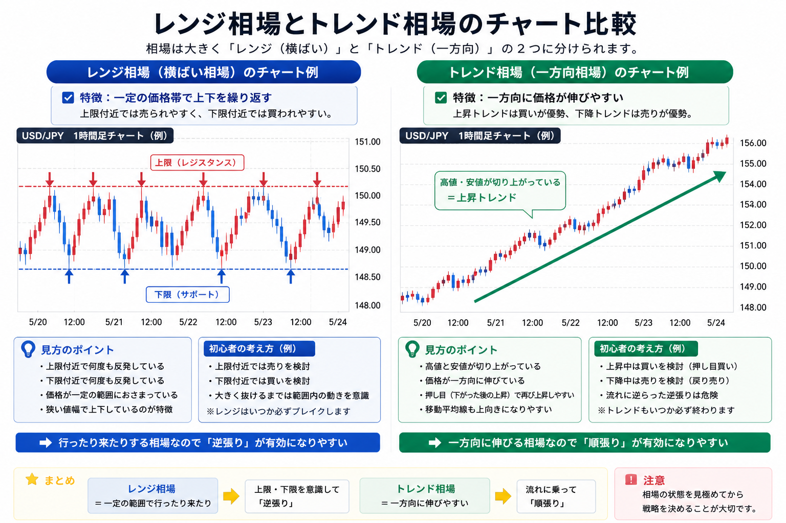
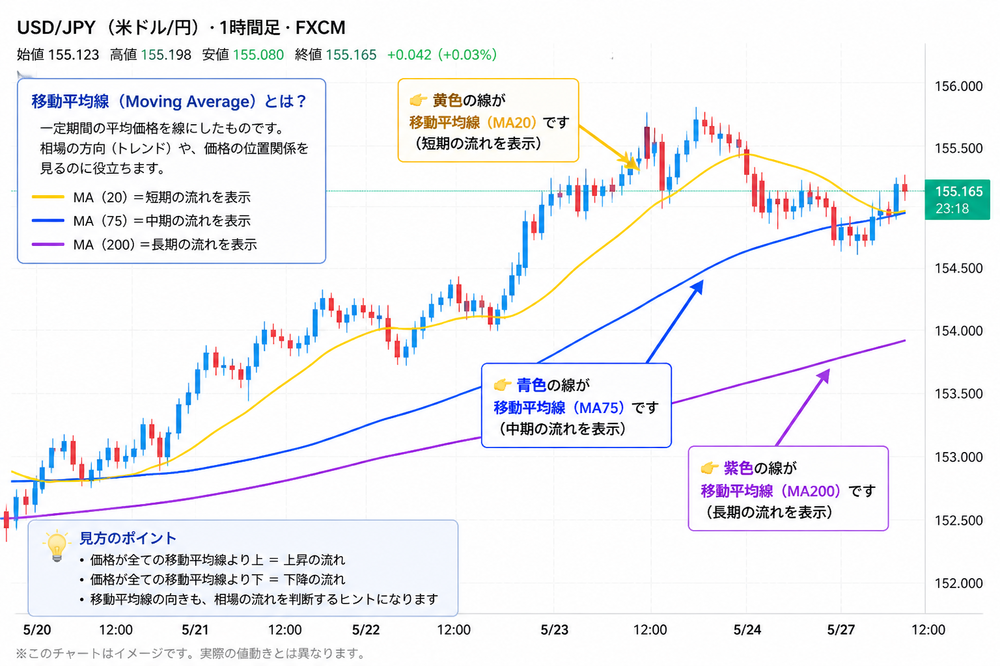
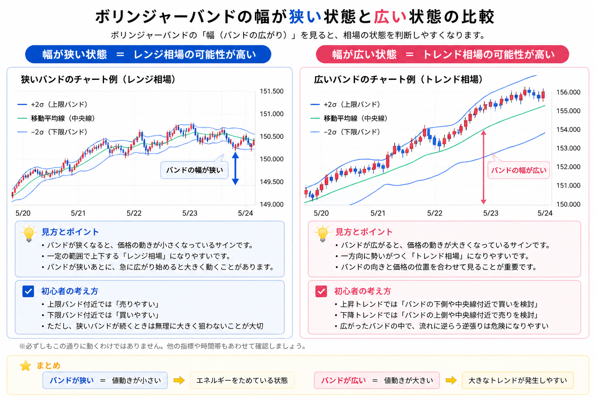

FXの相場とは？レンジ・トレンド・時間帯・チャートの見方を初心者向けに解説
FXは「相場の状態」を見ることが重要

- FXでは、売買する前に「今の相場状態」を確認することが大切です
- 相場は大きくレンジ相場とトレンド相場に分かれます
- 時間帯や通貨ペアによっても、値動きのクセは変わります
- 移動平均線やボリンジャーバンドを見ると、相場の状態を判断しやすくなります
FXで大事なのは、「どの通貨を買うか」だけではありません。
まず見るべきなのは、今の相場がどんな状態なのかです。
同じ米ドル/円でも、日によって動き方は変わります。
ほとんど動かず上下する日もあれば、一方向に大きく伸びる日もあります。
この状態を見ずに取引すると、判断がズレやすくなります。
たとえば、レンジ相場なのにトレンドを狙ったり、トレンド相場なのに逆張りを続けたりすると、損失につながりやすいです。
この記事では、FX初心者向けに、レンジ相場・トレンド相場・時間帯・移動平均線・ボリンジャーバンドの見方をわかりやすく整理します。
この記事の結論
FXでは「何をするか」よりも、先に今の相場がどんな状態かを確認することが重要です。
レンジなのか、トレンドなのか。
動きやすい時間帯なのか、落ち着いた時間帯なのか。
この確認だけでも、無理な取引を避けやすくなります。
FXの相場は大きく「レンジ」と「トレンド」に分かれる

- レンジ相場は、価格が一定の範囲で行ったり来たりする状態です
- トレンド相場は、価格が一方向に動きやすい状態です
- 初心者はまず、この2つを見分けることから始めると理解しやすいです
FXの相場は、細かく見るといろいろな動きがあります。
ただ、初心者のうちは大きく2つに分けて考えるとわかりやすいです。
1つ目は、価格が上がったり下がったりを繰り返すレンジ相場です。
2つ目は、価格が上方向または下方向に流れやすいトレンド相場です。
取引する前に、「今はレンジなのか」「トレンドなのか」を確認するだけでも、売買の考え方はかなり変わります。
横にスクロールできます
| 相場の種類 | 動き方 | 初心者向けの見方 | 注意点 |
|---|---|---|---|
| レンジ相場 | 一定の範囲で上下しやすい | 上限・下限を意識する | レンジはいつか崩れる |
| トレンド相場 | 一方向に伸びやすい | 流れに逆らわない | 逆張りは危険になりやすい |
レンジ相場とは？価格が行ったり来たりする状態
- レンジ相場では、価格が一定の範囲で動きやすいです
- 上限付近では下がりやすく、下限付近では上がりやすい動きになりやすいです
- 短期売買やスキャルピングと相性がよい場面もあります
- ただし、レンジが崩れると一気に動くことがあります
レンジ相場とは、価格が一定の範囲で行ったり来たりする状態です。
チャートを見ると、上で止まりやすい場所と、下で止まりやすい場所が見えることがあります。
たとえば、何度も同じあたりで上昇が止まり、何度も同じあたりで下落が止まるような状態です。
このような相場では、「高いところでは売られやすい」「安いところでは買われやすい」と考えやすくなります。
レンジ相場は、短い値幅を狙う取引と相性がよい場面があります。
ただし、値幅が小さいぶん、スプレッドや損切りの位置にも注意が必要です。
レンジ相場で初心者が見るポイント
- 何度も止まっている上限があるか
- 何度も反発している下限があるか
- 値幅が狭すぎないか
- 急にレンジを抜けていないか
トレンド相場とは？価格が一方向に動きやすい状態
- トレンド相場では、価格が上方向または下方向に伸びやすいです
- 上昇トレンドでは買い、下降トレンドでは売りを考えやすいです
- 流れに逆らう逆張りは、損失が大きくなりやすいです
- 一度出たトレンドが、いつまでも続くとは限りません
トレンド相場とは、価格が一方向に動きやすい状態です。
上に伸びているなら上昇トレンド、下に落ちているなら下降トレンドです。
トレンド相場では、基本的に流れに逆らわないことが大切です。
上昇しているときに安易に売ると、さらに上がって損失が広がることがあります。
下降しているときに安易に買う場合も同じです。
初心者は「そろそろ反転するはず」と考えすぎない方が安全です。
トレンドが出ているときは、まず流れの方向を確認しましょう。
トレンド相場で初心者が見るポイント
- 高値と安値が切り上がっているか
- 高値と安値が切り下がっているか
- 移動平均線が同じ方向を向いているか
- 急な反転ニュースが出ていないか
FXは時間帯によって相場の動きが変わる
- 東京時間は、比較的落ち着いた動きになりやすいです
- ロンドン時間は、市場参加者が増えて動きやすくなります
- ニューヨーク時間は、さらに大きく動くことがあります
- 重要な経済指標がある日は、急変にも注意が必要です
FXは平日ほぼ24時間取引できます。
ただし、どの時間でも同じように動くわけではありません。
時間帯によって参加者が変わり、値動きの大きさも変わります。
そのため、同じ手法でも時間帯によって使いやすさが変わります。
横にスクロールできます
| 時間帯 | 特徴 | 出やすい相場 | 初心者向けの見方 |
|---|---|---|---|
| 東京時間 | 比較的落ち着きやすい | レンジになりやすい場面がある | 無理に大きな値幅を狙わない |
| ロンドン時間 | 参加者が増えて動きやすい | トレンドが出ることがある | 急に流れが変わることも見る |
| ニューヨーク時間 | 値動きが大きくなりやすい | 強いトレンドや急変が出ることがある | 経済指標とニュースに注意する |
初心者は、まず「今がどの時間帯か」を意識するだけでも十分です。
東京時間の感覚でロンドン時間に入ると、急に値動きが大きくなって戸惑うことがあります。
特に夜の時間帯は、値動きが大きくなる場面もあるため、損切りを置かずに取引するのは避けたいです。
移動平均線とは？相場の流れを見るための線

- 移動平均線は、一定期間の平均価格を線にしたものです
- 線が上向きなら、上昇の流れを確認しやすいです
- 線が下向きなら、下降の流れを確認しやすいです
- 初心者は、線の向きと価格の位置を見るだけでも使いやすいです
移動平均線は、過去の価格の平均を線にしたものです。
難しく聞こえるかもしれませんが、初心者向けに言うと相場の流れを見やすくする線です。
チャートだけを見ると、細かい上下に振り回されやすいです。
そこで移動平均線を見ると、今の流れが上向きなのか、下向きなのかを確認しやすくなります。
初心者向けの移動平均線の見方
- 線が上向きなら、買い目線を考えやすい
- 線が下向きなら、売り目線を考えやすい
- 価格が移動平均線より上なら、買いが強い可能性がある
- 価格が移動平均線より下なら、売りが強い可能性がある
ただし、移動平均線だけで勝てるわけではありません。
あくまで「今の流れを確認するための道具」と考えましょう。
レンジ相場では線が何度も交差して、判断しにくくなることもあります。
ボリンジャーバンドとは？価格の動く範囲を見る指標

- ボリンジャーバンドは、価格の動く範囲を見やすくする指標です
- 中央線と、その上下にあるバンドで構成されます
- バンド幅が狭いと、値動きが小さい状態を示しやすいです
- バンド幅が広いと、値動きが大きい状態を示しやすいです
ボリンジャーバンドは、チャート上に表示される帯のような指標です。
中央に平均線があり、その上下にバンドが表示されます。
初心者が最初に見るべきなのは、細かい計算式ではありません。
まずはバンドの幅が狭いか広いかを見ることが大切です。
横にスクロールできます
| バンド幅 | 相場の状態 | 初心者向けの見方 | 注意点 |
|---|---|---|---|
| 狭い | 値動きが小さい | レンジの可能性を考える | 急に広がることがある |
| 広い | 値動きが大きい | トレンドの可能性を考える | 高値掴み・安値売りに注意する |
バンドが狭いときは、相場があまり動いていない状態です。
そこからバンドが広がり始めると、大きな値動きにつながることがあります。
ただし、バンドが広がったから必ず勝てるわけではありません。
方向を間違えると損失も大きくなりやすいため、移動平均線や時間帯もあわせて確認したいです。
通貨ペアごとの特徴をざっくり知っておく
- USD/JPYは、初心者が最初に見やすい通貨ペアです
- GBP系は、値動きが大きくなりやすいです
- AUD系は、資源価格や中国経済の影響を受けやすい面があります
- 通貨ペアによって、同じ相場でも動き方は変わります
FXでは、通貨ペアによって値動きのクセが変わります。
同じ手法でも、通貨ペアが変わると難易度が変わることがあります。
初心者は、最初から値動きの激しい通貨ペアを選ぶより、まずは見やすい通貨ペアで相場の感覚をつかむ方が無難です。
横にスクロールできます
| 通貨ペア | 特徴 | 初心者向けの見方 | 注意点 |
|---|---|---|---|
| USD/JPY | 情報量が多く、比較的見やすい | 最初に相場感をつかみやすい | 米国指標や金利発表で急変することがある |
| GBP系 | 値動きが大きくなりやすい | 慣れてから検討したい | 損切りが遅れると損失が広がりやすい |
| AUD系 | 資源価格や中国経済の影響を受けやすい | 中長期の流れも確認したい | 材料次第で流れが変わることがある |
初心者がやりがちな相場判断のミス
- 相場の状態を見ずに取引してしまう
- レンジ相場なのにトレンド前提で考えてしまう
- トレンド相場なのに逆張りを続けてしまう
- 時間帯や経済指標を無視してしまう
初心者がやりがちなミスは、手法そのものよりも、相場の前提を間違えることです。
たとえば、レンジ相場なのに「このまま上に伸びるはず」と考えて高値で買ってしまうケースがあります。
逆に、強い上昇トレンドなのに「もう下がるはず」と考えて売り続けると、損失が膨らみやすくなります。
また、東京時間では落ち着いていた相場が、ロンドン時間やニューヨーク時間に入って急に動くこともあります。
時間帯を無視すると、想定外の値動きに巻き込まれやすいです。
取引前のチェックリスト
- 今はレンジ相場か、トレンド相場か
- 移動平均線は上向きか、下向きか
- ボリンジャーバンドの幅は狭いか、広いか
- 今はどの時間帯か
- 重要な経済指標やニュースはないか
- 損切り位置を決めているか
FXの相場を読むときは「当てる」より「確認する」意識が大切
- 相場を完全に当てることはできません
- 大事なのは、今の状態を確認して無理な取引を避けることです
- レンジ・トレンド・時間帯・指標を組み合わせると判断しやすくなります
FXでは、次に必ず上がるか下がるかを完全に当てることはできません。
どれだけチャートを見ても、予想が外れることはあります。
だからこそ大事なのは、相場を当てようとしすぎることではありません。
今の状態を確認して、無理な取引を減らすことです。
「今はレンジだから大きく狙いすぎない」
「今はトレンドだから逆張りを控える」
「夜は動きやすいから損切りを必ず置く」
このように、相場の状態に合わせて取引の考え方を変えることが重要です。
FXの基本をあわせて確認したい方へ

相場の見方を理解したら、FX用語やFX会社の比較も確認しておくと、取引全体の流れがつかみやすくなります。
以下の関連記事もあわせて確認してみてください。


一般ユーザー目線の体験でおすすめの会社をご紹介

よくある質問（FAQ）

-
Q. FXで相場を見るとはどういう意味ですか？
今の価格がレンジなのかトレンドなのか、どの時間帯でどれくらい動きやすいのかを確認することです。売買する前に相場の状態を見ることで、無理な取引を避けやすくなります。 -
Q. レンジ相場とは何ですか？
レンジ相場とは、価格が一定の範囲内で上がったり下がったりする状態です。上限付近では下がりやすく、下限付近では上がりやすい動きになりやすいですが、いつか崩れる点には注意が必要です。 -
Q. トレンド相場とは何ですか？
トレンド相場とは、価格が上方向または下方向に流れやすい状態です。上昇トレンドでは買い、下降トレンドでは売りを考えるのが基本ですが、急な反転には注意が必要です。 -
Q. 移動平均線は初心者でも使えますか？
使いやすい指標です。まずは線の向きと、価格が線の上にあるか下にあるかを見るだけでも、相場の流れを確認しやすくなります。 -
Q. ボリンジャーバンドでは何を見ればよいですか？
初心者はまずバンド幅を見ましょう。バンドが狭いと値動きが小さい状態、広がっていると値動きが大きくなっている状態として確認しやすいです。
ご利用にあたっての注意事項
本記事は情報提供を目的としており、投資の勧誘を目的としたものではありません。FX（外国為替証拠金取引）は元本保証のない金融商品であり、為替相場の変動、金利変動、スプレッドの拡大、流動性の低下等により損失が生じる場合があります。また、レバレッジを利用することで、預けた証拠金を上回る損失が発生する可能性もあります。取引開始前に、契約締結前交付書面や商品説明書等を必ず確認し、ご自身の判断と責任でお取引ください。
最終更新日：2026-05-01